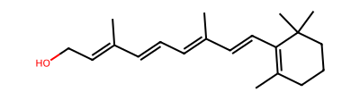
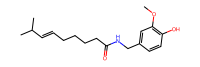
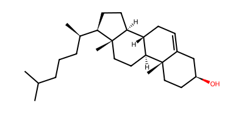
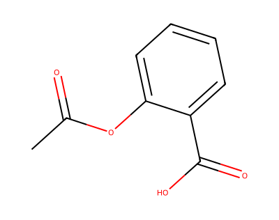
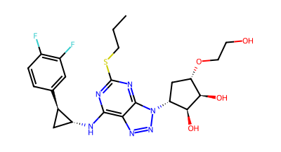
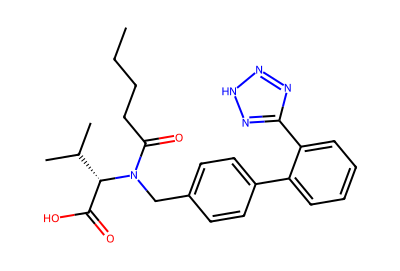
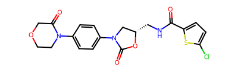

| Numer | Nazwa związku | Struktura | Energia dokowania (kcal/mol) | Wyniki dokowania |
|---|---|---|---|---|
| 1 | retinol |  | -5.13 | 8WCC_retinol.pdbqt |
| 2 | capsaicin |  | -7.08 | 8WCC_capsaicin.pdbqt |
| 3 | cholesterol |  | -4.14 | 8WCC_cholesterol.pdbqt |
| 4 | aspirin |  | -6.28 | 8WCC_aspirin.pdbqt |
| 5 | ticagrelol |  | -3.21 | 8WCC_ticagrelol.pdbqt |
| 6 | valsartan |  | -5.27 | 8WCC_valsartan.pdbqt |
| 7 | rivaroxaban |  | -3.65 | 8WCC_rivaroxaban.pdbqt |
Szczegółowe rezultaty dla każdego związku (Wszystkie pozy dokowania). KLIKNIJ
| name | rank | score | probability | residue_ids |
|---|---|---|---|---|
| pocket1 | 1 | 30.10 | 0.933 | A_102 A_103 A_106 A_107 A_110 A_153 A_183 A_185 A_193 A_197 A_261 A_264 A_265 A_268 A_287 A_291 A_79 A_82 A_98 A_99 |
| pocket2 | 2 | 16.35 | 0.777 | A_158 A_161 A_163 A_164 A_171 A_172 A_175 A_179 A_180 A_181 A_182 A_183 A_88 A_92 A_95 A_96 A_99 |
| pocket3 | 3 | 16.06 | 0.769 | A_174 A_178 A_180 A_181 A_182 A_183 A_184 A_185 A_264 A_268 A_271 A_272 A_276 A_278 A_279 A_280 A_281 A_283 A_284 A_287 A_82 A_83 A_85 A_86 |
| pocket4 | 4 | 5.64 | 0.272 | A_101 A_74 A_75 A_78 A_88 A_90 A_94 A_97 A_98 |
| pocket5 | 5 | 3.40 | 0.122 | A_116 A_119 A_120 A_123 A_130 A_301 A_305 A_307 A_57 A_61 |
| pocket6 | 6 | 3.30 | 0.116 | A_116 A_120 A_205 A_209 A_253 A_257 A_297 A_301 |
| pocket7 | 7 | 2.78 | 0.085 | A_101 A_104 A_105 A_147 A_151 A_155 A_70 A_74 |
| pocket8 | 8 | 2.60 | 0.075 | A_120 A_124 A_212 A_216 A_246 A_249 A_250 A_305 |
| pocket9 | 9 | 2.12 | 0.049 | A_25 A_28 A_284 A_285 A_288 A_289 A_29 A_292 A_32 A_83 |
| pocket10 | 10 | 1.98 | 0.042 | A_209 A_210 A_213 A_214 A_250 |
| pocket11 | 11 | 1.95 | 0.04 | A_111 A_114 A_115 A_118 A_145 A_149 A_200 A_201 A_204 |
| pocket12 | 12 | 1.41 | 0.018 | A_107 A_111 A_149 A_150 A_153 A_196 A_197 |
| pocket13 | 13 | 1.38 | 0.017 | A_136 A_139 A_140 A_143 A_48 A_59 A_62 |
| pocket14 | 14 | 1.35 | 0.015 | A_194 A_198 A_199 A_202 A_203 A_206 A_258 A_266 |
| pocket15 | 15 | 0.86 | 0.003 | A_302 A_307 A_308 A_47 A_61 |
Szczegółowe informacje o poszczególnych aminokwasach i ich udziale w kieszeniach dokowania. KLIKNIJ
System dokowania oparty o AutoDock Vina v.1.2.5 oraz P2RANK v.2.4.2
Autor: Arkadiusz Leniak mail: arkadiusz.leniak@gmail.com
github: https://github.com/Prospero1988